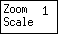
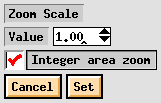
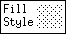
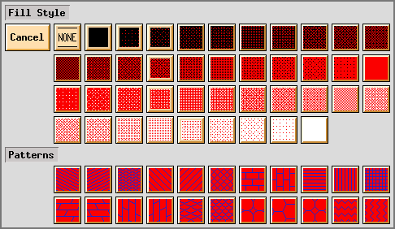
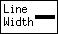
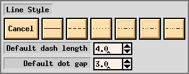
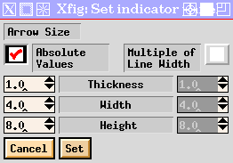
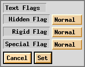

Normally, only the indicator buttons
which are significant to the selected mode
are placed on the indicator panel.
When it is not possible to display all the indicator buttons
at once, a scrollbar will be added to the indicator panel.
These setting may be changed by clicking those indicator buttons.
Each mouse button has the following function:
- 
(ZOOM SCALE)
- Set the zoom scale of display on the canvas.
The zoom scale may be set in the range of 0.01 to 50.
On many systems, the display on the screen will be almost actual-size
when this is set to 1.
Clicking this button with mouse button 1 will popup a panel
to enter new value of zoom scale from keyboard.
Clicking this button with mouse button 2 or mouse button 3
will decrease or increase the zoom scale by 1 respectively
(by 0.1 if zoom scale is less than 1.0 and 0.01 if the zoom is less than 0.1).
Zooming of the canvas may also be performed by
specifying the rectangle to be zoomed on the canvas (`area zoom').
To do this, specify the rectangle to be zoomed by
clicking mouse button 1 (`zoom area') while pressing CONTROL key
and specify one corner of the rectangle,
and then clicking mouse button 1 (`final point') again
at the opposite corner of the rectangle.
It is also possible to set zoom scale to 1
by clicking mouse button 3 (`unzoom') while pressing CONTROL key
on the canvas.
To force the area-zoom to zoom using integer values check the box
in the zoom popup panel that says `Integer area zoom'.

 (GRID MODE)
(GRID MODE)
- Set the size of the grid displayed on the canvas.
If this is set to None, no grid will be displayed.
The size of the grid may be selected
from 1/8inch, 1/4inch, 1/2inch and 1inch
if unit is set to Imperial (inches),
and from 2mm, 5mm, 10mm and 20mm
if unit is set to Metric.
This grid will not restrict positioning of objects.
If you want to set a restriction of positioning of objects,
use POINT POSITION.
 (POINT POSITION)
(POINT POSITION)
- Set the size of virtual grid (it is not visible)
to control the restriction of positioning of objects.
If this is not set to Any,
objects may only be placed on the virtual grid of the selected size.
If this is set to Any, objects can be placed anywhere.
The size of the virtual grid may be selected
from 1/16inch, 1/8inch, 1/4inch, 1/2inch and 1inch
if unit is set to Imperial (inches),
and from 1mm, 2mm, 5mm, 10mm and 20mm
if unit is set to Metric.
This will also restrict which objects may be
`picked up' when
editing.
If an object is not on the virtual grid specified here,
the object can't picked up.
This virtual grid will not displayed on the canvas.
The visible grid can be set by GRID MODE.
 (ROTATION ANGLE)
(ROTATION ANGLE)
- Set the angle for rotating objects with
ROTATE.
Clicking this button with mouse button 2 or mouse button 3
will decrease or increase the angle by 15 degrees respectively.
Clicking this button with mouse button 1 will popup
a panel to enter the angle.
The angle of TEXT
or ELLIPSE
objets may also set by TEXT / ELLIPSE ANGLE.
Note that some objects may only rotated by 90 degrees
(e.g. BOX)
 (TEXT / ELLIPSE ANGLE)
(TEXT / ELLIPSE ANGLE)
- Set the angle of TEXT
or ELLIPSE objects.
Positive values indicate counter-clockwise rotation,
and negative values indicate clockwise rotation.
Clicking this button with mouse button 2 or mouse button 3
will decrease or increase angle by 15 degrees respectively.
Clicking this button with mouse button 1 will popup
a panel to enter the angle.
To rotate exisiting objects,
use ROTATE.
See also ROTATION ANGLE.
 (DEPTH)
(DEPTH)
- Set the `depth' of objects.
The Depth is used to decide which object should be hidden
when objects overlap.
The object with larger depth will be hidden by
object with smaller depth.
Depth is an integer value of the range 0 to 999.
If objects with the same depth overlap,
it is unknown which object will be hidden,
and the display on the screen may be different from a printout or export.
 (NUMBER OF POLYGON SIDES)
(NUMBER OF POLYGON SIDES)
- Set the number of sides used in creating a regular polygon
with REGULAR POLYGON.
 (NUMBER OF COPIES)
(NUMBER OF COPIES)
- Set the number of copies to be made with COPY & ROTATE
(see ROTATE).
The number of copies to be made with
ARRAY PLACEMENT
should be set with NUMBER OF X COPIES
and NUMBER OF Y COPIES.

 (NUMBER OF X COPIES /
NUMBER OF Y COPIES)
(NUMBER OF X COPIES /
NUMBER OF Y COPIES)
- Set the number of copies to be made in the X and Y direction
when copying objects with ARRAY PLACEMENT
(see COPY).
The number of copies to be made with
COPY & ROTATE
should be set with NUMBER OF COPIES.
 (SMART-LINKS MODE)
(SMART-LINKS MODE)
- This button controls the smart-link mode.
If the smart-link mode is enabled,
lines with an end point on the perimeter of objects such as a BOX
or inside a COMPOUND object
(henceforth called links)
will be treated specially when those objects are
moved
or copied.
 OFF
OFF
- Disable the smart-link mode.
When moving or copying an object,
only the object will moved or copied.
 MOVE
MOVE
- When moving an object,
the end point of the link will be moved with the object
so that the link will remain linked.
When copying an object, the
link is also copied.
 SLIDE
SLIDE
- When moving an object,
the end segment of the link
(the segment which touches the object)
will slide so that the angle of the segment is maintained.
When copying an object, the
link is also copied.
Lines which touch objects such as
circles
or ellipses
are not treated as links.
If you want to use smart-link facility for such lines,
make the object into a
COMPOUND object.
 (VERTICAL ALIGN)
(VERTICAL ALIGN)
- Set the vertical alignment mode for
ALIGN.
![[None]](images/vertical-align-none.gif) Do not align vertically.
Do not align vertically.
![[Top]](images/vertical-align-top.gif) Align to top of objects.
Align to top of objects.
![[Center]](images/vertical-align-center.gif) Align center of objects.
Align center of objects.
![[Bottom]](images/vertical-align-bottom.gif) Align to bottom of objects.
Align to bottom of objects.
![[Even Center]](images/vertical-align-center-even.gif) Vertically distribute objects
so that the distance between center of each object is equal.
Vertically distribute objects
so that the distance between center of each object is equal.
![[Even Edge]](images/vertical-align-edge-even.gif) Vertically distribute objects
so that the distance between the edge of each object is equal.
Vertically distribute objects
so that the distance between the edge of each object is equal.
![[Abut Edge]](images/vertical-align-abut-edge.gif) Vertically distribute objects
so that the edge of each object touch.
Vertically distribute objects
so that the edge of each object touch.
 (HORIZONTAL ALIGN)
(HORIZONTAL ALIGN)
- Set the horizontal alignment mode for
ALIGN
![[None]](images/horiz-align-none.gif) Do not align horizontally.
Do not align horizontally.
![[Left]](images/horiz-align-left.gif) Align to left of objects.
Align to left of objects.
![[Center]](images/horiz-align-center.gif) Align center of objects.
Align center of objects.
![[Right]](images/horiz-align-right.gif) Align to right of objects.
Align to right of objects.
![[Even Center]](images/horiz-align-center-even.gif) Horizontally distribute objects
so that the distance between center of each object is equal.
Horizontally distribute objects
so that the distance between center of each object is equal.
![[Even Edge]](images/horiz-align-edge-even.gif) Horizontally distribute objects
so that the distance between the edge of each object is equal.
Horizontally distribute objects
so that the distance between the edge of each object is equal.
![[Abut Edge]](images/horiz-align-abut-edge.gif) Horizontally distribute objects
so that the edge of each object touch.
Horizontally distribute objects
so that the edge of each object touch.
 (ANGLE GEOMETRY)
(ANGLE GEOMETRY)
- Set the restriction of the angle of lines when creating
POLYLINE,
POLYGON,
SPLINE objects, etc.
 Unrestricted
Unrestricted
- Don't restrict the angle of lines.
With this setting, lines of any angle may created.
This is the default.
 LaTeX Line
LaTeX Line
- Allow lines to be drawn only at slopes
which can be handled by the line command of the LaTeX picture environment.
With this setting,
lines with slope x / y
(here, x and y are integers in the range -6 to 6)
may be created.
 LaTeX Vector
LaTeX Vector
- Allow lines to be drawn only at slopes
which can be handled by the vector command of the LaTeX picture environment.
With this setting,
lines with slope x / y
(here, x and y are integers in the range -4 to 4)
may be created.
 Manhattan-Mountain
Manhattan-Mountain
- Allow lines to be drawn in the horizontal, vertical
or diagonal (45 degrees) direction only.
 Manhattan
Manhattan
- Allow lines to be drawn in the horizontal or vertical direction only.
 Mountain
Mountain
- Allow lines to be drawn in the diagonal (45 degrees) direction only.
 (PEN COLOR)
(PEN COLOR)
- Set the color used to draw objects.
The color may be selected from 32 standard colors
and other arbitrary colors defined by user.
See Colors Panel for more information.
Clicking this button with mouse button 1 will popup the
Colors Panel.
The color to fill the region inside object is set by
FILL COLOR
and FILL STYLE.
If you want to fill the region without drawing the outline of the object,
set LINE WIDTH to zero.
 (FILL COLOR)
(FILL COLOR)
- Set the color used to fill the region inside objects.
As in PEN COLOR,
the color may be selected from 32 standard colors
and other arbitrary colors defined by user.
See Colors Panel for more information.
Clicking this button with mouse button 1 will popup the
Colors Panel.
The color to draw the outline of object is set by
PEN COLOR.
The FILL COLOR is only effective
when the FILL STYLE
is set to other than None.
If you don't want to fill the region inside objects,
set the FILL STYLE to None.
- 
(FILL STYLE)
- Set fill darkness or fill pattern.
Fill color is set by FILL COLOR.
If None is selected here, the region inside object will not be filled.
Clicking this button with mouse button 1 will popup this panel:

- 
(LINE WIDTH)
- Set the width of lines to draw the outline of objects.
The unit of the line width is exactly 1 screen pixel (about 1/80 inch).
If this is set to zero, the outline of objects will not be drawn.
The area fill will still be used
if area fill is enabled by FILL STYLE.
 (LINE STYLE)
(LINE STYLE)
- Set the line style
from solid, dashed, dotted, dash-dot,
dash-dot-dot and dash-dot-dot-dot.
It is also possible to set the dash length or dot distance.
The shape (ends) of each dash and dot may set by
CAP STYLE.
Clicking this button with mouse button 1 will popup
this panel:

 (JOIN STYLE)
(JOIN STYLE)
- Set the shape of the join point (vertex) of lines of objects
such as POLYLINE
or POLYGON.
This setting does not have a remarkable effect when the line is very thin.
 MITER
MITER
- Extend the outer edge of the lines until they touch.
Automatically uses BEVEL instead if the angle is too acute.
This is the default.
 ROUNDED
ROUNDED
- Join lines with an arc whose center is at the join point
and whose diameter is equal to the line width.
 BEVEL
BEVEL
- Join the lines with butt end caps
and fill the resulting triangular notch at the join position.
![[Join Style Example]](images/join-style-example.gif)
The shape of the end points of lines will set by
CAP STYLE.
 (CAP STYLE)
(CAP STYLE)
- Set the shape of end points of lines of objects
such as POLYLINE.
This setting does not have a remarkable effect when the line is very thin.
 BUTT
BUTT
- The ends of the line don't extend beyond the end points.
This is the default.
 ROUND
ROUND
- Terminate lines with a circle
whose diameter is equal to the line width.
 PROJECTING
PROJECTING
- Similar to BUTT,
but the ends of the line extend by half of line width beyond the
end points.
![[Cap Style Example]](images/cap-style-example.gif)
This setting also affects the shape of dashes or dots of
dashed-lines or dotted-lines.
The shape of the join point (vertex) of lines is set by
JOIN STYLE.
 (ARROW MODE)
(ARROW MODE)
- Determines whether an arrow head should be automatically added
at either or both ends of a line
when creating a POLYLINE,
OPEN ARC,
or OPEN SPLINE object.
![[None]](images/arrow-mode-none.gif) Do not add any arrow heads.
Do not add any arrow heads.
![[Forward]](images/arrow-mode-forward.gif) Add an arrow head at the last point of the line.
Add an arrow head at the last point of the line.
![[Both]](images/arrow-mode-both.gif) Add an arrow head at each end of the line.
Add an arrow head at each end of the line.
![[Backward]](images/arrow-mode-backward.gif) Add an arrow head at the first point of the line.
Add an arrow head at the first point of the line.
The shape of the arrow head may set by ARROW TYPE and
the size by ARROW SIZE.
It is also possible to add (or remove) arrow heads
to existing objects using
ADD / DELETE ARROW.
 (ARROW TYPE)
(ARROW TYPE)
- Sets the shape of arrow heads.
![[Arrow Types]](images/arrow-types.gif)
The size of arrow head may be set using ARROW SIZE.
 (ARROW SIZE)
(ARROW SIZE)

- Set the size of arrow head.
Clicking this button with mouse button 1 will popup
this panel:

![[Arrow Head]](images/arrow-size-image.gif)
- The Thickness controls the thickness of the line forming the arrow head.
- The Width controls the width at the back of the arrow head.
- The Height controls the length or height of the arrow head.
-
All these units are the same as for LINE WIDTH.
This is a change from previous versions of xfig, where the width and height
were in Fig units (1/1200 inch).
 If the Absolute Values box is checked, the values from the left
side entries are used and are absolute as just described.
If the Absolute Values box is checked, the values from the left
side entries are used and are absolute as just described.
-
If the Multiple of Line Width box is checked, the respective value from the
right side entry is multiplied
by the current line thickness setting to arrive at the sizes.
 (BOX CURVE)
(BOX CURVE)
- Set the corner radius of
ARC-BOX objects.
The units are the same as for LINE WIDTH.
 (ARC TYPE)
(ARC TYPE)
- Set the style of ARC object.
 OPEN ARC
OPEN ARC
- Draw only the arc.
 PIE-WEDGE
PIE-WEDGE
- Adding to the arc,
draw lines which connect each end of the arc to the center.
 (TEXT FONT)
(TEXT FONT)
- Set the font used to draw
TEXT objects.
The size of the font may be set by TEXT SIZE.
Clicking this button with mouse button 1 will popup the
Font Panel to select the font.
 (TEXT SIZE)
(TEXT SIZE)
- Set the size (point size) of
TEXT object.
The default is 12 points.
The font itself is set by TEXT FONT.
 (TEXT STEP)
(TEXT STEP)
- Set the vertical distance by which lines of text
will be spaced when entering multiple lines in
TEXT mode.
The distance is the product of the height of the font
(approximately TEXT SIZE)
and this value.
 (TEXT JUSTIFICATION)
(TEXT JUSTIFICATION)
- Set which part of the text should be placed
at the specified point when entering
TEXT object.
 LEFT JUSTIFIED
LEFT JUSTIFIED
- Place the left edge of the text at the specified point.
This is the default.
 CENTERED
CENTERED
- Place the center of the text at the specified point.
 RIGHT JUSTIFIED
RIGHT JUSTIFIED
- Place the right edge of the text at the specified point.
 (TEXT FLAGS)
(TEXT FLAGS)
- Set the Hidden, Rigid, and Special flags
of TEXT objects.
These flags are used for special situations,
and they are all OFF by default.
Clicking this button with mouse button 2 or mouse button 3
will switch which flag's state should be displayed on the button.
Clicking this button with mouse button 1 will popup this panel:

If the Hidden flag is set ON, the
string `<<>>' is displayed on the canvas
instead of the text itself.
The text will output as usual when
Printing
or Exporting.
This is useful to avoid text with long sequences of LaTeX commands
which makes the display hard to read.
If the Rigid flag is ON,
the size of the font of the TEXT object will not be changed
when a COMPOUND object
which includes the TEXT object is scaled.
If the Special flag is ON,
special characters (such as `\', for example)
in text will not be specially processed
but passed to the output `as is' when
Exporting.
This may be used to put LaTeX commands in text.
The use of LaTeX commands is especially helpful to
put complex mathematical formulas in the figure, for example.
If the Special flag is OFF,
the text will be processed before output.
There are two Font Panels;
one for PostScript fonts and one for LaTeX fonts.
Clicking a font button
(the labels of the buttons are drawn using the font)
will select that font.
Clicking the Use LaTeX Fonts button will
switch to the panel for LaTeX fonts,
and clicking Use PostScript Fonts button will
switch to the panel for PostScript fonts.
It is not guaranteed that all fonts in the panel of PostScript fonts
are available on all PostScript printers.
Also, different fonts may be used on the screen.
This is dependent on which fonts the X server has.
But at least these:

 Zoom scale of display
(ZOOM SCALE)
Zoom scale of display
(ZOOM SCALE)
 Mouse button 1 (`Menu')
Mouse button 1 (`Menu') ![[Update Control Buttons]](images/update-control.gif)
![[Font Panel - PostScript]](images/text-font-panel.gif)
![[Font Panel - LaTeX]](images/text-font-panel-latex.gif)